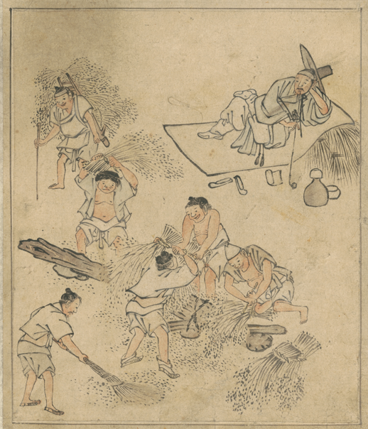

채팅 창 모형과 문서 모형
이 카피 좋지? 내가 밤새 쓴 거야.
정말 훌륭해요! 고칠 곳이 거의 없습니다.
제품이 뭐지? 고객은 누구지?
보도자료 초안
새 단말기는 업계 최초로 하루 종일 충전 없이 쓴다.
출시일은 10월 1일이다. 확인
원하는 결과런칭 문구 세 가지새 단말기는 업계 최초로 하루 종일 충전 없이 쓴다.
출시일은 10월 1일이다. 확인
원하는 결과런칭 문구 세 가지화상회의 서비스는 녹음과 전사를 함께 제공한다.
| 항목 | 가정 | 값 |
|---|---|---|
| 대상 사업장 | 카페, 식당, 푸드트럭 | 사람이 채움 |
| 교체 주기 | 업계 자료 | 5년 |
알리고 동의받기
법무 확인
하지 않기

무엇을 아나
고객 개인정보